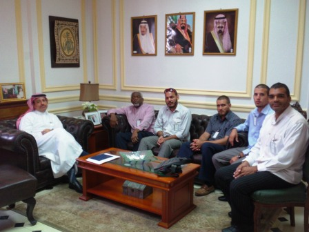
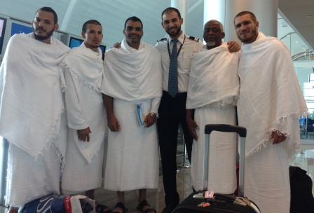
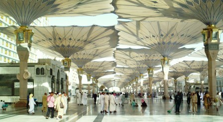

Par Jorge Elías Gil.
La louange est à Dieu. Bien que j'ai répété cette phrase plusieurs fois, à des moments différents et grammaticale et idées, J'ai découvert la belle expérience du sentiment qu'il ressort du fond du cœur pour vous remercier. Il n'est pas juste une phrase, es la aleya (1) apparaissant au début de la première sura (2) de la Noble Corán (3). El último versículo (4) del último de los Salmos (5) de la Biblia se conecta en su sentido con aquella aleya. A través de Sus nombres, de Sus libros y de numerosas situaciones y experiencias, el recuerdo de Dios me acompaño como un bálsamo en este viaje de la peregrinación (6), pues eso es la peregrinación, un viaje, a La Meca (7) para completar (8) la religión del Islam (9) en la vida de los musulmanes y las musulmanas (10), y es también un viaje de regreso hacia la naturaleza (11) original del ser humano.
Hasta donde conozco puedo afirmar que seis musulmanes cubanos, cinco hombres y una mujer, caminaron con sus pies descalzos sobre los lugares sagrados durante las jornadas del Hajj (12) de 2014, correspondiente al año 1435 de la Hégira (13), o calendario islámico. El Recinto Sagrado de La Meca, que contiene la Gran Mezquita (14) con la Kaaba (15) en su centro, y el valle de Arafat (16), la llanura de Muzdalifa (17) así como el desierto de Mina (18), todos estos lugares cercanos a La Meca, fueron visitados por el profeta Muhammad (19) – la paz y las bendiciones de Allah (20) sean con el -, cuando realizo la peregrinación, hace más de 1400 anos. Desde entonces los musulmanes del mundo entero, si tienen recursos para hacerlo, visitan La Meca, en los meses indicados (21) y cumplen así con el quinto pilar del Islam. Caminar junto a millones (22) de hombres y mujeres procedentes de muchas naciones – de diferentes culturas e ideologías, ricos y pobres, jóvenes y viejos, tous les, en una sola dirección y con un solo propósito, el de llegar a la Kaaba y con el pensamiento dirigido hacia Dios decir ” Señor, estoy aquí “ -, generó el reflejo de la guía en nuestros corazones para ser mejores seres humanos, pues junto a los procesos religiosos propios de la peregrinación, el excelente comportamiento de los musulmanes inherente a la ética del Islam dejó un sello imborrable dentro de nosotros.
El recuento que comparto a continuación habla de los preparativos del viaje, de las escalas realizadas antes de llegar a Arabia Saudita y de la visita a La Meca y a Medina. También habla del encuentro entre las culturas, de la comprensión acerca de los aspectos esenciales de la existencia humana y del orgullo de ser musulmanes y de ser cubanos, pero sobre todo habla de la importancia de andar en la vida por la senda recta del bien, avanzando hacia un mundo mejor con buenas acciones. Comprobé una vez más, en La Meca, algo que yo había aprendido de pequeño a través de la obra de José Martí, y que nos dice que se es bueno porque si, porque cuando se hace un bien se siente algo bello dentro.
El día antes.
26 de septiembre de 2014, 10:14 AM. Aunque aprovechaba para hacer algunas fotos a los hermanos musulmanes que estaban presentes, me sentía preocupado porque Yamal (23) no llegaba, el encuentro había sido fijado para las 10 AM. El confortable salón de espera de la Embajada de Arabia Saudita en La Habana me parecía un poco incómodo esa mañana, la razón por supuesto era yo, en la tarde del día siguiente, sábado 27 Septembre, nuestros pasos abrirían la senda de un viaje ansiado por todo musulmán hacia los lugares sagrados. Un detalle le imprimía al hecho un tinte especial, éramos los primeros en peregrinar desde Cuba y aunque parecíamos felices y llenos de emoción por ello, de hecho lo estábamos, en ocasiones éramos sorprendidos en medio de actitudes y proyecciones propias de la incertidumbre y el aturdimiento interior ante un regalo tan grande, y esa sorpresa entre nosotros ocasionaba la verdadera risa y el disfrute, que venía como un completamiento y una relajación.
En esa observación en la que me encontraba llegó Yamal, momentos después subíamos al segundo piso de la sede diplomática para reunirnos por unos minutos con el Embajador Extraordinario y Plenipotenciario del Reino de Arabia Saudita en Cuba, Excelentísimo Señor Saeed Hassan Saeed Aljomae, recibiéndonos una vez más con el cariño y el afecto propios del Islam. Compartimos impresiones e ideas relacionadas con el inminente viaje y conocimos acerca de cuanto se había trabajado para facilitar nuestra visita a La Meca, en más de una ocasión los ojos del Señor Embajador mostraron algunas lágrimas de emoción mientras hablaba de la importancia de la peregrinación y nos pidió a los cinco musulmanes cubanos que hiciéramos súplicas por ellos y por sus familias una vez que pisáramos el suelo del Recinto Sagrado de La Meca y estuviéramos frente a la Kaaba. Antes de despedirnos el Señor Embajador nos entregó a cada uno los pasaportes que contenían las visas del Hajj, y que indicaban que viajábamos como invitados del Rey Abdullah Bin Abdulazeez Aal Saud, y como parte del Programa para la Peregrinación del Custodio de las Dos Sagradas Mezquitas que este año 2014 recibía 2400 musulmanes provenientes de más de 70 países de todos los continentes, incluyendo 1000 peregrinos palestinos específicamente de los territorios de Gaza. Nuestro grupo estaba integrado por Yamal, Ibrahim, Yahya, Samir e Isa (24).

Al final de esa mañana Ibrahim, Yahya y Samir completaron sus documentos de salud para viajar. Yo visite la Casa Museo de los Árabes e hice el rezo del viernes o Yuma (25) en este lugar. Luego Ibrahim, Yamal y yo cambiamos el poco dinero que teníamos para poder usar algunos dólares estadounidenses durante el viaje, estos recursos fueron vitales más adelante. Sobre las 4 PM. Visité la casa de Yahya, en Marianao, donde me encontraría con algunos hermanos de los cuales necesitaba su abrazo antes de partir, hermanos musulmanes que han trabajado mucho por el Islam en Cuba y por el bienestar de nuestra sociedad. Al atardecer iba llegando a casa de mis padres para estar con ellos un tiempo y despedirme recibiendo sus buenos deseos para las jornadas que se avecinaban. Esa noche, una vez en mi casa, pude dormir mejor. Los días anteriores pasaba horas y horas despierto, dentro de mi cientos de pensamientos acaparaban toda la atención sin poder conciliar el sueño.
El día, el viaje.
Los musulmanes creemos en el Decreto (26) Divino, que incluye lo bueno y lo malo, y que indica acerca de todas las situaciones y eventos que acontecen, desde los más generales hasta los detalles más pequeños, como la cantidad de las gotas de la lluvia y el número de las hojas de los árboles. En ese convencimiento sabíamos que nuestro viaje a La Meca ya había sido decretado, cuando Dios decreta algo le basta decir Sea, y es. Unos minutos después de las 5 PM. del sábado 27 de septiembre de 2014 nos encontramos en la terminal 3 del Aeropuerto Internacional José Martí de La Habana, el vuelo saldría a las 8:45 PM. Chequeamos nuestros pasajes en la taquilla de la línea rusa Aeroflot que nos llevaría hasta la próxima escala, para mí mucho más que eso, pues Moscú significaba el reencuentro con Rusia, mi segunda patria, dos décadas después de haber vivido varios años en esa ciudad.
En la sala de espera, antes de abordar el avión, llame desde mi teléfono móvil a dos personas, al profesor Ricardo Selman, hijo del sastre libanés Said Selman y creador de la guayabera cubana, y a mi hermana musulmana Naaima a quien le había prometido agua de Zamzam (27), de La Meca. Mientras hablaba con ellos observaba a las personas que como nosotros esperaban para abordar el avión, entre los pasajeros rusos se destacaba un joven, evidentemente pasado de tragos, que disfrutaba acercándose a todos, traspasando esa línea que la sobriedad conserva entre las personas. Para mi sorpresa ese joven se sentó a mi lado en el avión y le imprimió a la mayoría de las 12 horas del vuelo una atmosfera que contenía una mezcla de aliento etílico, comentarios graciosos y en ocasiones frases irrespetuosas sin la conciencia de que yo entendía con claridad el idioma ruso, unido todo esto a mi deseo de desaparecer en ocasiones. Las horas fueron pasando hasta llegar a la terminal D del Aeropuerto Sheremetevo, el domingo 28 de septembre à la 2:20 PM. hora de Moscú.
El próximo destino era Dubai, en los Emiratos Árabes Unidos (28), pero el vuelo salía de otro aeropuerto, dans ce cas Domodedovo, ubicado a mas de 100 kilómetros del que nos había recibido. Era necesario entonces salir a la ciudad y esto me hacia disfrutar interiormente la circunstancia con una intensidad que solo yo comprendía y que más de una vez, en pocos minutos, lleno mis ojos de lagrimas. Buscamos entonces un taxi y al indagar con varios choferes se me fue congelando un poco la alegría inicial haciéndome aterrizar realmente junto al recuerdo del título de aquella película rusa de los 80 que tanto gusto en Cuba, ” Moscú no cree en lagrimas “. El taxi hasta el Aeropuerto Domodedovo costaba 150 $, cantidad a la que no llegábamos ni siquiera entre todos. Quedaba una sola posibilidad: usar el trasporte público de la ciudad, me sentí útil porque yo era el único del grupo que conocía el idioma ruso. Pregunte a una señora en la parada y me explico con detalles que hacer, primero el ómnibus 851, 50 rublos cada ticket, hasta la estación Rechnoi Backsal del Metro, medio que también usamos, esta vez a 40 rublos por persona. Esos precios me generaban varias sensaciones, entre ellas un gran asombro pues recordaba que en 1989, cuando llegue por primera vez a Moscú, el Metro costaba 5 copecks, 25 años después el precio de este servicio de transporte urbano había aumentado 800 veces. Realmente me encontraba en otro país, esta Rusia era muy diferente, una vez más la certeza de que todo cambia. No obstante la bondad de estar allí de nuevo se mantenía dentro de mí, me encanto ver a la gente de Rusia una vez más en la vida, con su manera muy peculiar de ser, duros y tiernos al mismo tiempo, como niños con carácter.
Al fin llegamos, ya de noche, a la estación Paveleski donde debíamos tomar el expreso hasta Domodedovo. Compramos los pasajes, al costo de 400 rublos cada uno, observando que el tren salía en 10 minutos por lo que fue necesario correr, sin saber casi a donde ir en medio de la estampida. Entramos en el vagón correspondiente y tres minutos después de sentarnos, se cerraron las puertas, la próxima parada era nuestro aeropuerto y el tiempo de viaje: algo menos de una hora. Por primera vez desde que salí de La Habana pude dormir un poco, mi sueño fue profundo y reparador. La amplificación interna del tren anuncio la llegada y me sentí como nuevo, comenzaba a entender que era una peregrinación, como dije al principio, es sencillamente un viaje.
29 de septiembre de 2014, le lundi.
El amanecer, a través de la ventanilla del avión de la línea Emiratos, mostraba la interesante organización urbana que veíamos desde el aire, cercana al Aeropuerto Internacional DXB de Dubai. El vuelo EK0132 había dejado Moscú 5 horas antes con todos sus asientos ocupados. Pasajeros rusos, asiáticos, árabes y de otros países se preparaban para pisar el suelo de este famoso Emirato, poseedor de grandes obras de ingeniería, construcción y centro turístico por excelencia no solo del área del golfo sino del mundo entero. Las aeromozas iban chequeando que estuvieran correctamente ajustados los cinturones de seguridad, el aterrizaje era inminente y la llegada a otra cultura nos asaltaba la emoción a cada momento con las imágenes que veíamos, los idiomas que escuchábamos y los olores, sobre todo las aromas que eran únicas. Tratábamos de caminar unidos a la salida de la nave aérea en un impulso propio de aquellos que viajan juntos y se introducen en lugares nuevos y diferentes, una forma sublimada del instinto de conservación. A nuestro alrededor todo estaba en orden, los rostros sonrientes, el camino despejado y amplio, aun así íbamos juntos. De pronto recordé que podía hacer fotos y videos, no quería perder este momento y comencé a grabar el descenso por la escalerilla. Una persona ocupo mi atención, primero en la pantalla de la cámara y unos segundos después frente a mí, era el guardia más cercano que me prohibía seguir filmando, lo hacía con respeto pero con determinación y capté el mensaje con precisión, había que apagar la cámara. Las normas de seguridad de los aeropuertos son estrictas, de hecho en cada uno de los controles de frontera, en cada chequeo durante el viaje, la revisión de los equipajes y de los pasajeros era minuciosa. Dubai es un mundo propio del famoso libro anónimo de ” Las mil y una noches “, solo que toda la fantasía y la maravilla pertenecientes a esa obra se han actualizado allí, sin perder su encanto, a través de la tecnología más moderna, de las variantes más avanzadas al servicio de las personas y del pensamiento más dinámico que se pueda concebir. Los productos, comercios y ambientes que nos rodeaban eran la expresión y la extensión de una forma de ser y de una concepción que no repara en el objeto en si sino en la intensión relacionada con él. El sujeto adquiere entonces una enorme responsabilidad en el proceso de las relaciones entre las personas donde la primera cualidad necesaria es la cortesía. Compramos algunas tarjetas telefónicas para llamar a nuestros familiares en Cuba y caminamos mucho, fue necesario desplazarnos de la terminal 3 a la terminal 1 del propio aeropuerto, transitando entre ellas unos 2 kilómetros de marcha con nuestros equipajes de mano, entre tiendas, restaurantes, sobre esteras rodantes, subiendo por escaleras eléctricas y bajando con nuestros adoloridos pies que ya empezaban a protestar, sin embargo el motivo principal, el esfuerzo real de este viaje ni siquiera había comenzado. Chequeo del vuelo, pasaje para abordar, espera por unos minutos antes de entrar al avión. Ya comenzábamos a sentir este proceso como algo familiar que se repetía entre escala y escala. Justo en el momento de espera, aconteció algo que marco la diferencia, el joven que había realizado los controles a nuestros pasaportes se percata que éramos peregrinos cubanos para el Hajj (29) y nos dice que desde La Meca habían llamado coordinándolo todo para que vistiéramos desde Dubai el Hijram (30) o la ropa que usan los hombres durante la peregrinación. Los blancos paños estaban esperando por nosotros. Fue algo que nos impacto mucho, todavía no habíamos entrado en Arabia Saudita y ya sentíamos el espíritu especial propio de esta jornada. Corrimos literalmente hasta la pequeña mezquita o sala de rezo, a unos 100 metros del lugar anterior. Allí nos quitamos toda la ropa, nos purificamos con agua (31), perfumamos el cuerpo, nos vestimos con el hijram y suplicamos hacer nuestra peregrinación pidiéndole a Dios que nos cuidara y facilitara todos los asuntos para culminarla exitosamente. Nos dirigimos a toda prisa de vuelta para recuperar nuestros pasaportes y pasajes que se habían quedado con el joven, en ese momento recordé la carrera del día anterior en Moscú para tomar el tren, aún con las vestiduras de santidad seguíamos corriendo. Curiosamente yo me sentía muy a gusto con mi nuevo atuendo, lo llevaba hacia unos minutos pero lo percibía como parte de mi naturaleza, como si lo hubiera usado toda la vida. Entonces nos tomamos la primera foto vestidos así, el peso sutil la misericordia de Dios comenzaba a sentirse como un desbordamiento desde todos lados, faltaba muy poco para el comienzo de nuestra peregrinación.

Volando hacia Arabia Saudita.
Señor
no permitas que en mi adoración
yo haga de ti
un ídolo de ti. (32)
El interior del avión de la línea Saudia, que nos transportaba desde Dubai hasta Jeddah (33), era muy diferente al ambiente de los aviones de la línea Emiratos, que se destacan por su color, elegancia y extremo confort. La línea aérea de Arabia Saudita (34), aunque elegante y confortable también, era más sobria en todos sus aspectos que llamaban al recogimiento y la aprehensión sencilla de la vivencia. En la nave saudita todo estaba disponible, sans aucun doute, pero al mismo tiempo se percibía un mensaje silente que te hablaba acerca de la impermanencia de lo que te rodeaba, las cosas, los servicios y las facilidades eran puertas a lo invisible, que constituía la Realidad ” con mayúsculas ” y que no dependía en lo absoluto de nadie, solo de Dios. Tres horas nos separaban de esa importante ciudad-puerto en el país que vio nacer hace 15 siglos al profeta Muhammad en el año del elefante (35). Tres horas que transcurrieron muy rápido, por momentos descansábamos, por momentos leíamos textos que nos permitían estudiar los pasos de la peregrinación y entre el descanso y la lectura me sorprendió el aviso de que estábamos sobrevolando el mikat (36) correspondiente por lo que se exhortaba a los hajjis (37) a repetir la talbiya (38) y hacer la declaración de Hijram. Justo en ese momento entrabamos en territorio sagrado en el cual no se puede cortar un árbol, ni siquiera dañar una pequeña planta, ni privar de la vida a ningún ser, ni ofender a ninguna persona. Las normas del estado de santidad en el que nos encontrábamos exigían de nosotros una actitud que posteriormente cambiaria nuestras vidas para siempre. Aun así disfrutábamos con tranquilidad, reíamos, y nos comunicábamos entre nosotros como si dejáramos de ser individuos separados para convertirnos en un solo ser, esto permitió la posibilidad de compartir los temas más amados y discrepar acerca de los asuntos mas difíciles sin el mas mínimo asomo de temor ni preocupación. Entre nosotros como musulmanes no existía posibilidad de hipocresía, falsedad o simulación, experimentábamos con total libertad algo que habíamos aprendido del profeta Muhammad, el nos enseñó que la mentira es lo que un hermano le oculta a otro, lo cual nos ubicaba en la verdad básicamente como una actitud.
El aterrizaje, à la 4:25 PM. del lunes 29 de septiembre de 2014, en el Aeropuerto Rey Abdulazees de Jeddah fue rápido y preciso, igualmente la salida del avión hacia los autobuses que nos aproximarían a las instalaciones de la Terminal S de dicho aeropuerto. Musulmanes de varios países viajaban con nosotros, el color de la masa de pasajeros comenzaba a teñirse de blanco en comparación con la visión de Dubai en la cual aparecían algunos Hajjis entre la multitud de viajeros. En Jeddah el grueso de personas consagradas para el Hajj sobresalía en su número. Yo observaba desde la ventanilla el paisaje alrededor de las edificaciones cercanas, todo era desértico y la arena amarilla y fina aparecía por todos lados, solo cubierta por las urbanizaciones y las carreteras.
Ya en las salas de la terminal los guías encargados de cada grupo o país comenzaban a buscar a su gente, a los pocos minutos apareció el nuestro, un joven saudita, preguntándonos en inglés si estábamos todos, ya tenía nuestros nombres y comenzaron los controles de salud chequeando nuestros documentos sanitarios internacionales actualizados en La Habana 2 días antes de partir. Luego salimos en busca de los ómnibus que nos conducirían durante unas 3 horas hasta La Meca, pero antes de entrar en ellos vi algo que se repetiría de muchas maneras durante las dos semanas que permanecimos en aquel país, cerca de una oficina de venta de tarjetas para teléfonos móviles estaba parado un joven con una caja de cartón entre sus manos, dentro habían sombrillas para protegerse del sol que el iba entregando gratis a todos. Le vi hacer esto con cada una de las decenas de personas que pasaban en el tiempo que mi vista lo observo, días después vi a varios hombres comprar con sus recursos agua, jugos y comidas rápidas para regalarlas a los peregrinos buscando con ello bendiciones.
Los ómnibus Yutong de fabricación china en los que viajábamos eran muy confortables, en el anuncio digital del nuestro se podía conocer que la temperatura en el interior del ómnibus era de 21 grados, en el exterior era de 38 grados y la humedad relativa era de 0 por ciento. Mientras anochecía la tranquilidad se adueñaba del grupo de viajeros, unos 30 pasajeros. Alguno rompía el silencio repitiendo la talbiya (39), el cuerpo extenuado se desconectaba por momentos. En esa paz y en ese cansancio entramos en la ciudad. En un giro del ómnibus nos despertamos descubriendo a lo lejos la Gran Torre del Reloj de La Meca, que es actualmente el reloj más alto del mundo, ubicado frente al Recinto Sagrado de la Kaaba y visible desde cualquier parte de la ciudad.
Meca.
En el momento de salir a la calle y entrar en nuestro hotel mis manos tienen dificultad para sostener varias cosas al mismo tiempo. Segundos después las cámaras de la televisión y de la prensa que nos esperan provocan en mí más desconcierto hasta hacerme sentir como un niño. En realidad la presencia por primera vez de peregrinos cubanos en La Meca estaba como noticia en varios medios informativos, Al arabiya, Arab news e incluso Al jazira dedicarían espacios para incluir aspectos acerca de nuestra visita, una semana más tarde en el desierto de Mina las cámaras nos acompañaron durante horas, incluso cuando no estábamos consientes de su presencia.
El Sheik Fawaz nos esperaba en la puerta del Hotel Makarim Umm Alqura, un bello y moderno edificio de una decena de pisos ubicado a unas quince cuadras del recinto Sagrado de la Kaaba, un confortable hotel de cinco estrellas. Sheik Fawaz había estado con nosotros durante todo el mes de Ramadán (40) en La Habana. Por primera vez la comunidad de musulmanes de la capital cubana contaba con un recitador enviado directamente del Reino de Arabia Saudita con el objetivo de repasar el Noble Corán y aprender acerca del Islam durante las oraciones nocturnas del Tarawit (41). Estas noches de recitación coránica fueron para nosotros una bendición especial, yo dejaba todo para asistir y excepto los días de este sagrado mes de ayuno que dediqué a visitar a mis hermanos en otras provincias de Cuba, priorizaba estos rezos y la recitación del Corán que el Sheik dirigió incluso enfermo las últimas noches de Ramadán (42). Posteriormente mi hermano Ibrahim y yo pudimos recopilar algunos periódicos en los que aparecían artículos de nuestra llegada, entre ellos los que incluían fotos de nuestro primer encuentro con el Sheik Fawaz en La Meca, lo cual nos lleno de mucha alegría. Este Sheik se portó con nosotros, y con muchos otros peregrinos provenientes de varias naciones, como un verdadero padre, preocupado a cada minuto de los asuntos más sencillos y respondiendo a cualquier interrogante con paciencia y ternura. Esta misma fue la actitud de muchas personas que de una forma u otra nos atendieron durante la estancia en La Meca y en Medina. Agradezco la compañía del joven saudita Khalid Alhamad, excelente hermano cuyo recuerdo me viene de muchos momentos pero sobre todo de los primeros instantes, unos minutos después de arribar a La Meca, yo trataba de explicarle algo acerca del viaje, el me escuchó con paciencia, cuando terminé de comunicarle mi idea en inglés, que pensaba haber expuesto impecablemente, me dijo sonriente: he trabajado en Buenos Aires – Argentine – durante cuatro años, hablo bien el castellano.
Así entramos en esta ciudad, con la emoción colmando nuestros corazones, sorprendidos, alegres de ver nuevamente al Sheik, contentos de conocer a nuevos hermanos sauditas y de otras partes del mundo. Una vez instalados en nuestra habitación, refrescamos nuestros cuerpos y vestidos nuevamente con el hijram visitamos por primera vez el restaurant que casi cerraba en el tiempo de la cena, comimos algo y rápidamente salimos a la calle para tomar uno de los mini – buses del hotel que cada 10 minutos y durante 24 horas llevaban a los huéspedes lo más cerca posible de la Gran Mezquita. Cinco minutos después comenzábamos a caminar, a dos cuadras del Recinto Sagrado con el objetivo de visitarlo por primera, hacer la Umra (43) o visita menor y elevar nuestras súplicas al Todopoderoso al ver la Sagrada Kaaba. Yo sabía que un momento muy especial se acercaba, que en unos minutos estaríamos en medio de un suceso extraordinario, lo que yo no sabía es que iba a vivir la experiencia más intensa de mi vida.
En la casa de Dios.
Habíamos dejado todo en el hotel, solo llevábamos nuestras vestiduras, los documentos en el cinturón del hijram y pomos de agua que nos entregaban las personas por el camino. À 50 metros de alcanzar la explanada exterior de la Mezquita mi vista comienza a divisar la multitud de miles y miles de peregrinos que aparecen de súbito producto de la inclinación de la calle de acceso. El corazón comienza a latir muy fuerte y los labios pronuncian alabanzas sin poderse contener. Me quedo parado por unos minutos observando aquel símbolo que representaba la humanidad entera, personas de todas las naciones, hablando todos los idiomas, provenientes de todas las direcciones convergiendo en un solo punto, hacia una sola idea, amparados en un solo concepto: la unicidad de Dios.
Obedeciendo la exhortación de mis hermanos para continuar y escuchando los guardias que repiten en árabe sin cansarse ” Hajji Tariq, Hajji Tariq “, que en español puede ser algo así como ” peregrino abre paso, peregrino abre paso “, continuo mi marcha ya dentro de la explanada, un área inmensa de cientos de metros cuadrados que rodea la Gran Mezquita en todo su perímetro y que durante las etapas cercanas al Ramadán y a la Peregrinación alberga muchos más visitantes que de costumbre comparado con los otros meses del año. Cientos de personas duermen en ese momento sobre el suelo, otros rezan, otros caminan en distintas direcciones, conversan, se detienen a decidir qué hacer, los que andan en grupos se organizan, movimiento y calma al mismo tiempo. Son aproximadamente las 11:30 H., nos movíamos dentro de una multitud de dos millones de hombres y mujeres, todos íntimos del Altísimo, El permite a Sus amigos visitar Su casa.
Descalzarse las sandalias, para no extraviarlas, ni perder mucho tiempo luego buscándolas, me las pongo cerca del cinturón y me cercioro de estar entrando por el centro de la gran puerta. Dentro todo es luz, mármol, tonos dorados, limpieza impecable, cientos de miles de musulmanes en paz. Mi corazón late con mucha fuerza, parece que se me va a salir del pecho, pero curiosamente no me siento mal ni incomodo por ello, es un estado peculiar, difícil de explicar. Las lágrimas comienzan a correr, pero no hay llanto ni lamentación, es un momento muy íntimo con mi Señor, me doy cuenta que los hermanos a mi lado están viviendo algo similar pero no puedo reparar mucho en ellos, es imposible, solo recuerdo que Ibrahim lloraba intensamente mientras caminábamos, a nuestro lado iban Samir y Yahya que recordaba su visita anterior a La Meca indicándonos los detalles que él ya conocía. Yo miraba mis pies que iban bajando en dirección a la Kaaba y daba gracias por la oportunidad de pisar el suelo sagrado que antes fue honrado por millones y millones de musulmanes y por nuestros profetas, desde Abraham hace 4000 años hasta Muhammad hace 1400 années. Poco a poco nos vamos aproximando al patio central, a medida que avanzamos la multitud se agolpa ante nosotros sin permitirnos ver más allá de las personas que se ubican delante. Bajamos otros escalones y el espacio entre las personas se aclara para dejarme ver de momento la Sagrada Kaaba, como un descendimiento con el cual no se qué hacer, solo lloraba y agradecía repitiendo una y otra vez ” las alabanzas son para Dios “, en árabe ” aljamdulillah “.
Umra.
Levisita menor se hace al llegar a La Meca, incluye las siete vueltas a la Kaaba comenzando por la esquina de la piedra negra. Una vez concluidas se realizan dos rakaats (44) detrás del sitio de Abraham (45) o lo más cercano que se pueda a este lugar. Posteriormente se recorre siete veces la distancia entre las colinas de Safa y Marwa rememorando la dificultad de Agar (46) cuando intentaba encontrar agua para su pequeño hijo Ismael. Dios tuvo misericordia al escuchar el llanto del niño y les dio de beber del manantial de Zamzam (47) que después de 4000 años sigue brindando su agua para calmar la sed de los que llegan a la mezquita. En varias ocasiones tomamos agua allí y pude cumplir con la promesa de traerla a dos hermanas musulmanas de La Habana que me hicieron esa petición.
Cuando terminamos nos cortamos un poco el pelo gracias a la colaboración de un musulmán que a la salida de una de las puertas laterales de la mezquita ayudaba en este detalle a todos los hermanos posibles. A las 2:20 AM. regresamos tomando nuevamente los mini buses del hotel y descansando hasta el día siguiente. El martes 30 de septiembre hicimos otra Umra, esta vez llevé mi cámara y tomé fotos y videos de todo guardando un testimonio visual muy útil para mostrar a todos los hermanos en Cuba una idea de lo acontecido con los millones de musulmanes que se acercaron entonces a La Meca.
El martes y el miércoles siguientes incluyeron el descanso y el alimento necesarios para nuestros cuerpos y las visitas a lugares como museos, en especial a la institución donde se realiza la kiswa (48) o tela que cubre la Kaaba. Dos días para conocer a otros hermanos, recibir el apoyo de varios de ellos y sentir el cariño de algunos muy lejanos en la geografía y la cultura pero cercanos en la ternura que emana del corazón. Fue el caso de los musulmanes de Serbia y de Kosovo que viajaban juntos como parte de un solo grupo y que no descuidaron su atención en favor de nosotros, los peregrinos cubanos. Muchos nos preguntaban acerca de Cuba, de su situación, de la economía, querían saber de primera mano y a través de nuestras palabras que acontecía realmente en nuestro país, en específico acerca del Islam y los musulmanes cubanos en la isla. Fueron horas que disfrutamos muchísimo, ellos nos dieron su visión posterior de un conflicto que en los años noventa lastro la población musulmana de aquellos territorios, aprendiendo con el tiempo a extraer la mejor de las experiencias para el futuro. Durante el diálogo las palabras y los ojos de aquellos hermanos estaban limpios a pesar de rememorar años violentos, momentos de muerte y desolación.
Así eran aprovechadas las horas diurnas, de intenso calor en la calle, pero muy agradables en el interior del hotel. Las noches se dedicaban a visitar el Recinto Sagrado de la Kaaba y comprar después algunos regalos sencillos en los zocos (49) cercanos a la mezquita, que aún de madrugada se mantenían abiertos. Durante estas compras visitamos una pequeña tienda, llamada Centro Al-Khalij, ubicada en Ajyad, en la calle principal y al lado del Elaf Al-Mashaer. Este lugar seria frecuentado por mí en más ocasiones hasta volverse visita obligada para saludar al dependiente, un yemenita de Sana que se convirtió en amigo. Allí compre frutos secos para mis padres, perfumes para obsequiar a los hermanos y amigos en Cuba y en especial un perfume de rosas para mi madre, al saber nuestro amigo de Yemen que era para ella me regalo otro igual. La lógica de su acción no estaba basada en el negocio, en realidad me entregaba dos productos por el precio de uno, su intensión buscaba las especiales bendiciones que recibe toda persona piadosa cuando hace acciones por los padres de los demás, nuevamente recordé a José Martí.
Mina, Arafat, Muzdalifa.
Dejando la mayoría de nuestras pertenencias en La Meca nos dirigimos a Mina, Arafat y Muzdalifa como nuestra próxima escala. Estos sitios nos obsequiaron numerosas experiencias de las cuales extraigo algunas sin atender mucho al orden en que se sucedieron ni a la jerarquía de su importancia, más bien como las recuerda el corazón, con ternura y sencillez. El profeta Muhammad trasmitió que ” Arafat es el Hajj ” (50) de ahí la importancia de pernoctar en aquel lugar, una llanura hacia la que era necesario viajar desde la ciudad. Llegamos de noche en el ómnibus número 12 que se mantuvo siendo el nuestro en los días de La Meca. Las grandes tiendas de campaña, de decenas de metros de largo y ancho, con todas las facilidades, incluida la climatización, me asombraron mucho pues estábamos en medio del desierto. Allí disfrutábamos de las mismas comodidades del hotel de La Meca, los cientos de metros de alfombras de color verde sobre la arena le imprimían al ambiente una visión algo irreal, como el color dado a un dibujo en el capricho de un niño pequeño. Lo más importante de este lugar no eran las comodidades de nuestro programa como huéspedes del Rey ni la belleza circundante, sino el examen de conciencia de los que estábamos allí. Mas allá de los limites de nuestro campamento millones de musulmanes se movían o descansaban, rezaban inclinándose ante el Todopoderoso o alzaban sus manos en señal de súplica, comían lo que tenían para reponer fuerzas o se purificaban para el próximo rezo, acciones que unidas formaban la estructura y la dinámica de un único acto de adoración al Único Dios que lo merece. Más de una vez vi aparecer a Yahya que regresaba asombrado de los bordes del campamento, ante la visión de los cientos de miles de personas que no cesaban de moverse desde y hacia todas las direcciones.
Fue bello ver la bandera cubana junto a la de otros países, indicando todas el lugar donde debían descansar los peregrinos que se unían en un número cercano a los cien y provenientes de 10 o 15 naciones como promedio en cada una de las grandes tiendas. También estaba nuestra bandera, en medio de las demás, en los miles de esquemas diseminados a cada momento y en cada lugar, en los mapas que indicaban los detalles del Hajj de 2014. Era la bandera de nuestros padres, de Vicente Aguilera, uno de los hombres más ricos de la isla que en el siglo XIX lo entrego todo a la Independencia de Cuba, la bandera de Céspedes, de Martí y del General Maceo. La bandera de Juan Gualberto Gómez, la de Bonifacio Byrne y la de Julian del Casal. La que ha vivido en los corazones anónimos de muchos hijos de Cuba que sin importar donde estén no olvidan a su patria, y Dios conoce lo que contienen los corazones. La bandera de Alejo Carpentier, de Dulce Maria Loynaz y de Guillermo Cabrera Infante, de José Antonio Portuondo y de Levi Marrero. La de Antonio Guiteras y la de José Antonio Echeverría. La de millones de cubanos que en las calles de La Habana, de Santiago de Cuba y de otras ciudades del mundo unen con sus pasos las horas de los días. La bandera de nuestra patria y la de todos, de todos los cubanos.
El día del viernes 3 de Octubre fue un poco difícil. Yo veía la noche anterior una neblina amarilla en la que repare solo como parte de la visión mágica del lugar, en mi intento y deseo de sublimar cada momento, cada experiencia. Luego supe que era arena muy fina en suspensión a decenas o cientos de metros de altura, pero que en ocasiones se acercaba a la superficie introduciéndose en nuestros pulmones como parte de la respiración. Me fue útil tomar algunas pastillas de un antiestaminico llamado Loratadina, que es bueno porque no da sueño y que me había dado mi padre como preventivo si era necesario, pero que en el desierto de Arabia Saudita más que prevenir casi me salvó. Aún así estuve horas acostado, intentando reponerme. Al mediodía mi hermano Ibrahim me recuerda que es parte de la Sunna (51) o Tradición del profeta Muhammad escuchar el sermón o discurso del viernes durante la estancia en Arafat, entonces buscamos un grupo de hermanos que incluyera este discurso en inglés, pero no encontramos ninguno. Media hora después nos sentamos entre una veintena de musulmanes de Kosovo escuchando el discurso en su lengua natal, sin entender una sola palabra, pero conectados con el espíritu del grupo y una vez más acogidos con ternura por los musulmanes de esta nación.
Si bien Arafat mostraba la expresión más alta en su momento de la concentración de personas, Muzdalifa la sobrepasaba, siendo superada a su vez por Mina. La intensidad, cada vez mayor, de las multitudes destrozaba la lógica. De donde salía tanta gente y hacia donde iba, sin cesar durante días y a través de centenares de caminos y carreteras, recorriendo miles de kilómetros, sencillamente planteaba un reto a la aprehensión sensata de la posibilidad en sí misma. En Muzdalifa nos detuvimos durante un tiempo, allí comimos, rezamos y recogimos las pequeñas piedras que lanzaríamos como parte de la lapidación simbólica de Shaitan (52). Ya era de noche mientras tomaba algunas fotos a mi alrededor, en ocasiones como una acción repetitiva y mecánica ante tanto cansancio y tanto dolor en mis pies. La realidad de una peregrinación se había materializado en nosotros, en medio de ella, del cansancio y de la interacción constante, mi corazón comenzaba a entenderse con todo mediante el uso de otro lenguaje, inmediato, que conoce al instante. Muchos aspectos que antes eran importantes perdían su significado para entrar a formar parte de otra concatenación. El diseño había cambiado.
En Mina nos perdimos. Ibrahim se perdió él solo, caminando durante más de dos horas decenas de kilómetros, entre millones de personas, en una dirección distinta a la que tomamos los otros cuatro integrantes del grupo, para movernos en círculo hasta no poder más. Nos convencimos de que era necesario pedir ayuda. Samir repara en el cartel de una tienda donde se podía leer en inglés ” Centro de guía para peregrinos perdidos “. Allí intentamos durante media hora buscar las mejores referencias y aconsejar al mismo tiempo la mejor de las variantes a Ibrahim con el que me comunicaba frecuentemente usando los modernos teléfonos móviles entregados a cada uno como parte del Programa de los peregrinos. Una hora después y gracias a la orientación de Dios y de los guías asignados encontrábamos nuestro campamento y rescatábamos a Ibrahim. En ese estado, totalmente extenuados, ver una vez más la bandera redondeaba el orgullo. Comer, rezar, dormir, había concluido otro día.
Tres pilares indican los lugares en Mina, recogidos por la tradición, en los cuales el profeta Abraham expulso a Shaitan lapidándolo e impidiendo que lo desviara de lo que el Todopoderoso, el Dios de todos los mundos, le había indicado, c'est-à-dire, obedecerlo. Antes de Abraham, comenzando por Adán, y después de él, concluyendo con Muhammad como el cierre de la profecía, todos los mensajeros fueron depositarios de un mismo tesoro, el conocimiento de que Dios no había creado a los seres humanos excepto para que Lo adoraran, en un acto de adoración pura, sin asociarle nada. Imitamos al profeta que fue llamado amigo íntimo de Dios, Khalil, y como Abraham lo hizo, realizamos los lanzamientos. Íbamos así avanzando en el completamiento de nuestra religión.
A la mañana siguiente encuentro al Sheik Fawaz que conversaba en una discreta esquina con un peregrino de África. Al verme me pregunta cómo va todo, yo le explico y me felicita, me indica que debo raparme la cabeza y me dice que ya estaba en condiciones de vestir ropa común, comienzo a experimentar una extraña alegría. Minutos después hacíamos la cola pues varios hermanos musulmanes esperaban por lo mismo. El barbero, un hombre de unos cuarenta años, le prendía fuego al porta cuchillas, como medida de higiene, entre uno y otro cliente, además de usar hojas desechables para afeitar. Samir y Yamal, enfermos de la gripe, pasaban la mayor parte del tiempo acostados en nuestra habitación, que era visitada varias veces al día por los médicos del campamento. Poco a poco se fueron recuperando, entre fiebres y medicamentos que desconocían al no poder leer sus nombres en árabe. A Mina fueron a vernos y a saludarnos varias personas que sabían de nosotros los cubanos a través de la prensa y la televisión. Entre ellos recuerdo con especial cariño a un hombre de baja estatura proveniente de Gaza, Palestine, que nos busco solamente para darnos un abrazo.
Una vez más dejábamos atrás parte de nuestros equipajes para recuperarlos posteriormente en Medina. La tradición indicaba salir caminando de Mina hacia La Meca, arrojando las pequeñas piedras en los tres lugares nuevamente para luego tomar el mismo camino que usara el profeta Muhammad. Al terminar en el tercero de los pilares abandonamos Mina a través de caminos inclinados, entre grandes montañas rocosas y formando parte de una inmensa marea humana. Las mismas rocas que habían observado a nuestro profeta miles de años atrás, nos daban su saludo en silencio, y entre el sol, la muchedumbre y el dolor de nuestros pies ya rotos por la sequedad de la piel – aún usando zapatos -, entramos en La Meca.
La despedida.
No hay excusa para que los peregrinos, hombres y mujeres, abandonen La Meca sin antes hacer la última visita a la Kaaba y dar las vueltas rituales de la despedida. Solamente las mujeres en el tiempo de su menstruación o después del parto están autorizadas a irse de la ciudad sin cumplir este último requisito. Antes de visitar el Recinto Sagrado aprovechamos unas dos horas para comprar algunos regalos pendientes. Ibrahim y yo economizamos y así adquirimos unas maletas para el viaje. Estas gestiones las realizamos caminando lo cual empeoró la situación de mis pies. Terminada la compra regresamos al hotel y sin perder tiempo salí con Samir e Ibrahim para la mezquita, una vez más a pie, aumentando así mi dolor, obligándome a apoyar mis pasos de forma anti-natural lo que me aliviaba por momentos pero a la larga hacia que mi estado fuera peor.
Hacíamos una espera sentados en el suelo de la explanada exterior de la mezquita cuando insisto una vez más y llamo al técnico Abdul Rashid, un hombre de la India radicado en Jeddah que había visitado la Habana meses antes. Logro comunicar y ambos nos asombramos, el por mi presencia en La Meca y yo por conocer, a través de él, que mi hermana Musulmana Marilú, como siempre la he llamado con cariño, estaba allí peregrinando. No lo podía creer, una mujer cubana recibiendo las mismas bendiciones que nosotros y había llegado a La Meca antes. Dios demostraba una vez más que es Misericordioso y Justo. Minutos más tarde hablábamos ella y yo, con una alegría y una sorpresa compartidas, que no pasaban aun después de 20 minutos de conversación telefónica. No fue posible vernos allí, en ese momento ella permanecía ingresada con asma en una clínica, pero en el viaje de regreso, volando entre Moscú y La Habana, compartimos impresiones por unos minutos.
Luego entré en la casa de Dios por última vez. Primero las siete vueltas, luego el rezo cerca del sitio de Abraham, posteriormente el recorrido siete veces de la distancia entre Safa y Marwa. Durante estos recorridos ya mi dolor era insoportable, en el tercero de ellos Samir e Ibrahim, ayudándome por cada lado, me aguantaban sin que esto cambiara mi situación. Ibrahim me sugiere tomar un poco de agua de Zamzam pero yo le digo que no tengo sed, el insiste. Le hago caso, más bien para cambiar un poco y descansar en realidad. Al acercarme a las pilas que brindan agua de este manantial el contacto de mis pies con el frescor del agua que caía al suelo me alivia completamente el dolor en unos minutos, solo quedaba la fuerte molestia de una herida en la parte posterior del pie derecho pero el intenso dolor de la planta de ambos pies había desaparecido. El profeta Muhammad enseñó que el agua de Zamzam puede convertirse en lo que necesitemos. Pude terminar así los cuatro recorridos restantes. Media hora después y gracias a Dios y Su misericordia habíamos completado nuestra religión, sonriendo nos abrazamos y con alegría le agregamos a nuestros nombres en el Islam la palabra Hajji delante, a partir de ese momento seriamos Hajji Ibrahim, Hajji Isa y Hajji Samir.
Medina.
El oasis de Yatrib había acogido al profeta Muhammad en el comienzo de la Hégira (53) con la alegría y la paz con la que sigue recibiendo a todos los que llegan a esta ciudad. Poco después del arribo de Muhammad comenzaron a llamarle ” la Ciudad del Profeta ” para quedarse, producto del uso continuado, con el calificativo de ” la Ciudad “, en árabe ” Madina “por lo que hoy el mundo entero la conoce como Medina. Entre La Meca y este oasis hay un poco más de 500 kilómetros que recorrimos en unas horas y en ómnibus. En el camino parábamos para comer, rezar y relajarnos unos minutos. El hotel Gran Mercure, solo a una cuadra de la Mezquita del Profeta – la cual constituye el segundo lugar sagrado más importante del Islam después del Recinto Sagrado de la Kaaba en La Meca – nos daba una bienvenida especial. Existía allí una velocidad diferente, La Meca es una centrifuga de amor, Medina, una nube de paz.

Las inmensas y modernas sombrillas que brindan sombra en las áreas exteriores de la Mezquita de Medina me recordaron una vez más, en su imagen, la estética de un niño. Aun observándolas de cerca parecían irreales, decenas de metros en su alto y su perímetro hacían que cada una de estas estructuras pereciera estar a instantes de despegar del suelo. Estoy seguro que Leonardo da Vinci hubiera enmudecido frente a ellas. De noche se cerraban para convertirse en mástiles que indicaban todos la dirección hacia el cielo estrellado o hacia el infinito. Dentro de la mezquita miles de columnas creaban en su conjunto la danza más bella de las formas. En aquel lugar las alfombras, las lámparas, los colores, las puertas, las luces y las sombras entonaban al unísono alabanzas al Dios de paz, al único que existe, llamado por Sus nombres en todos los idiomas e invocado por todos los corazones, aún por aquellos que no están consientes de ello. Rezar allí fue el primer impulso, luego aproximarse a la tumba del profeta Muhammad y brindarle no solo mis saludos sino el saludo de todas las musulmanas y de todos los musulmanes cubanos. Pedirle a Dios bendiciones para el profeta Muhammad, su familia y para todos los profetas, y pedirle que nos guie siempre por el camino recto, eran las súplicas que se repetían dentro de mí. Muchas imágenes, muchos recuerdos y muchas personas regresaban a mi mente. La conciencia de numerosas acciones incorrectas del pasado le exigía a mi persona un examen y un diálogo con mi Señor.
Durante la estancia en Medina visitamos el Complejo Rey Fahd para la impresión del Noble Corán que se dedica a esta importante labor hace 30 années. Este complejo produce 160 versiones de texto coránico en diferentes lenguas y más de 275 millones de copias del Corán. Imprime además millones de copias de la Biografía del profeta Muhammad y produce grabaciones de audio de métodos conocidos de recitación, promoviendo diferentes campos de estudios coránicos y apoyando estudios islámicos e investigaciones en Arabia Saudita y en otros países. Observamos allí el proceso de impresión del Corán y recibimos ejemplares de este libro en árabe y en su traducción de sentido al español.
La mezquita de Quba fue otro de los lugares visitados. Conocida como la mezquita de las dos quiblas, le debe su nombre al hecho de que en este lugar se le indicó al profeta Muhammad por Dios rezar en dirección a La Meca, hasta ese momento los musulmanes rezaban en dirección a Jerusalén. Llevado por un impulso de curiosidad formulé en ese lugar una de las preguntas más inocentes de mi vida, se me ocurrió averiguar dónde estaba la quibla anterior dentro de la mezquita, un hermano me respondió con la mayor ternura posible que la primera había sido destruida, la quibla (54) de los musulmanes era una sola, hacia La Meca.
Aproveché la paz de Medina para adentrarme un poco en el mundo de las televisoras del Golfo. En la habitación del hotel se podían disfrutar alrededor de 30 canales provenientes de Egipto, Sudan, Maroc, Syrie, Arabia Saudita, Kuwait, Omán y otras naciones cercanas además de la BBC en árabe y en inglés. También dediqué horas a conversar con hermanos musulmanes de otros países como Finlandia, Comoras, Vietnam, Libia y Palestina. Se acercaba la partida por lo que indagábamos acerca de los detalles, los horarios de nuestros vuelos, como y donde, todo lo necesario. Antes de dejar la ciudad del profeta, justo unos minutos previos, recibimos unos regalos especiales como parte de las cortesías hacia los cientos de huéspedes del Rey que allí estábamos. Este grupo de presentes a cada uno de nosotros consistía en una alfombra de rezo con el logo del Programa que nos había invitado, un exquisito perfume y un recipiente con cinco litros de agua de Zamzam. Con este detalle final nuestros ómnibus se dirigieron al Aeropuerto Internacional de Medina, le 11 Octobre de 2014, luego Jeddah, Dubai, Moscú y La Habana, algo menos de tres días de regreso y con tantas anécdotas que duplicarían la extensión de este recuento que solo intenta compartir algunas de las impresiones de un viaje maravilloso en su esencia, como el mismo que han realizado millones de musulmanes durante miles de años para llegar a La Meca y decir ” Señor, estoy aquí “.
Notas
(1) Aleya: en árabe signo o señal, alude a lo que Dios muestra como Sus signos, en el Corán son las partes que componen las Suras o capítulos de este libro.
(2) Sura: literalmente forma, se refiere a las 114 capítulos que se incluyen en el Corán.
(3) Noble Corán: Libro que está compuesto por 114 Suras con la revelación de Dios, a través del ángel Gabriel, al profeta Muhammad durante los 23 años de su misión profética. Es el libro sagrado de los musulmanes y tiene la guía a partir de la cual se organizan todos los aspectos de la religión del Islam y de la vida de los musulmanes.
(4) Versículo: unidad o parte en la que está organizado el texto bíblico dentro de los capítulos que integran los libros de la Biblia. El versículo en cuestión: ” Todo lo que respira alabe a Jah ” (Salmo 150, versículo 6) se conecta en su sentido con la aleya de la primera Sura del Corán que dice ” Las alabanzas son para Allah “
(5) El Libro de los Salmos de David, en la Biblia, es de referencia para los musulmanes. Los pilares de la fe del Islam son seis: La creencia en la Unicidad de Dios, la creencia en los ángeles, la creencia en los libros revelados, la creencia en los mensajeros a los que fueron revelados estos libros, la creencia en el Día del Juicio Final y la creencia en el Decreto de Dios, sea bueno o malo. Entre los libros revelados, anunciados en el Corán, están los Salmos o ” el Salterio ” , y entre los Mensajeros está David. Los otros libros que se mencionan en el Corán son: los Libros de Abraham, la Torá de Moisés y el Evangelio de Jesús.
(6) La peregrinación: quinto pilar del Islam, que indica para los musulmanes la visita a la Kaaba, ubicada en La Meca, al menos una vez en la vida si se tienen recursos para hacerla. Los otros cuatro pilares son: La Unicidad de Dios, la Oración – cinco veces al día – , el Zakat o tributo para los pobres y necesitados y el Ayuno en el mes de Ramadán.
(7) La Meca: ciudad ubicada en la Región Oeste del Reino de Arabia Saudita, À 75 kilómetros al este del Mar Rojo y a 80 kilómetros de Taif y de Jeddah. Está situada a los pies de las montañas Sarawat y a 277 metros de altura sobre el nivel del mar. Es la capital espiritual de todos los musulmanes del mundo.
(8) Completar: este término alude al texto coránico de la tercera aleya de la quinta sura ( Sura de la Mesa Servida ) del Corán que dice: ” Hoy os he completado vuestra práctica de Adoración, he culminado Mi bendición sobre vosotros y os he aceptado complacido el Islam como práctica de Adoración “. Lo anterior fue lo último que se le reveló al profeta Muhammad y aconteció durante la peregrinación.
(9) Islam: Sometimiento a Dios, Islam comparte la misma raíz de la palabra con salam, que significa paz, y con musulmán, que significa aquel que se somete a Dios. Islam no es solo una religion sino un sistema completo de vida, legislado por el Corán en la mayoría de sus aspectos.
(10) Musulmanes y musulmanas: el Corán en repetidas ocasiones hace esta aclaración, mencionando ambos géneros.
(11) Naturaleza original: en árabe ” fitra “, aquella cualidad pura del ser humano que en su interior define y condiciona toda la existencia, sin contaminación ni degradación, manteniéndolo totalmente limpio, como un recién nacido. El profeta Muhammad indicó que aquella persona que hace la peregrinación y le es aceptada, es como si acabara de salir del vientre de su madre.
(12) Hajj: en árabe peregrinación.
(13) Hégira: calendario lunar islámico que tiene su inicio en el año 622 después de Cristo. Este fue el año en que el profeta Muhammad emigró de La Meca a Medina.
(14) Mezquita: lugar para el rezo, donde se reúnen los musulmanes y las musulmanas cinco veces al día para cumplir con el pilar de la oración. La Gran Mezquita de La Meca es el lugar sagrado del Islam más importante del mundo.
(15) Kaaba: literalmente en árabe cubo. Designa la construcción ubicada en el patio central de esta Gran Mezquita de La Meca. Simboliza el culto al Dios Único y fue edificada por Abraham con la ayuda de su hijo Ismael hace 4000 années.
(16) Arafat: nombre de uno de los lugares que se visitan en las afueras de la Meca durante la peregrinación y donde se debe pernoctar por un tiempo.
(17) Muzdalifa: en este sitio se recogen las pequeñas piedras que luego se arrojan en la lapidación simbólica de Shaitán.
(18) Mina: en este lugar se realizan los lanzamientos de estas piedras constituyendo en su conjunto la referida lapidación.
(19) Muhammad: en árabe ” el que más alaba “, es el nombre del profeta del Islam. Su nombre fue anunciado con anterioridad por el profeta Jesús. El Evangelio y el Corán recogen este anuncio. Nació en La Meca, dans l'année 571 d.C. , desde pequeño se destacó por su sabiduría y sus excepcionales condiciones. De joven era reconocido por todos como un hombre puro y recto, le llamaban ” el confiable”. Se destacó en el comercio, à la 25 años se casó con una viuda rica, Jadiya, con la que tuvo hijos e hijas. À la 40 años comenzó a recibir revelaciones de Dios a través del ángel Gabriel. Estas revelaciones continuaron durante 23 années, todo lo que fue revelado a Muhammad por Dios constituye el Corán. El profeta murió a los 63 ans d'âge, en la ciudad de Medina.
(20) Allah: en árabe: Dios. Palabra en este idioma para designar a la Divinidad en su carácter único. En este artículo de ha usado la palabra Dios por ser la que Lo designa en Español. El nombre de Dios en árabe es utilizado tanto por los musulmanes como por los cristianos de países y culturas árabes los cuales al referirse a Dios usan la palabra Allah.
(21) Los meses indicados: la peregrinación debe hacerse, según lo que está revelado en el Corán durante los meses de Shawwal, Dhul-Qada y los primeros diez días de Dhu’l-Hijja, del calendario lunar islámico.
(22) Millones: las cifras de personas son difíciles de precisar, no obstante se estima que durante estas dos semanas, en el mes de Dhu’l-Hijja, unos cinco millones de peregrinos pueden haber visitado La Meca.
(23) Yamal: en el texto del artículo se hace referencia a los peregrinos cubanos usando sus nombres en el Islam.
(24) Yamal es Rodolfo Perea y trabaja como chofer en Santiago de Cuba, siendo los cuatro siguientes residentes de La Habana. Ibrahim es Ignacio Bauza y se desempeña como profesional de la salud en servicios médicos especializados, Yahya es Pedro Lazo, Presidente de la Liga Islámica de Cuba, Samir es Alain Medina, artesano e Isa es Jorge Elías Gil, Artista de la Plástica y autor de este artículo.
(25) Rezo del viernes o Yuma: visita a la mezquita para el rezo del viernes al mediodía, obligatorio para los hombres y opcional para las mujeres.
(26) Decreto Divino: la creencia en este Decreto es uno de los seis pilares de la fe en el Islam.
(27) Zamzam: nombre del manantial ubicado cerca de la Kaaba, en La Meca. Su agua salvó la vida de Agar y su pequeño hijo Ismael, hace 4000 années.
(28) Emiratos Árabes Unidos (E.A.U.): con su capital en Abu Dhabi y una población de 2 millones y medio de habitantes, E.A.U. es un estado de Oriente Medio compuesto por siete emiratos: Abu Dhabi, Ajman, Dubai, Fujairah, Ras Al-Khaimah, Sharjah y Umm al-Qaiwain. Están situados en la península arábiga, bordeando el Golfo de Omán y el Golfo Pérsico, entre Arabia Sauidita y Omán. La riqueza de este estado se basa en gran medida en la explotación de petróleo y gas natural.
(29) Nuestras visas indicaban el objetivo del viaje, c'est-à-dire, la peregrinación a La Meca.
(30) Hijram, palabra que designa el estado de santidad en el que entran los peregrinos cuando se consagran para realizar esta acción. También se les llama así a las ropas que usan los hombres que realizan este pilar del islam.
(31) La purificación con agua o ablución se hace como parte de esta preparación. También es necesaria antes de cada oración.
(32) Pequeño poema titulado ” Súplica ” y que forma parte del poemario escrito por Jorge Elías Gil a partir de la visita a La Meca y Medina.
(33) Jeddah: el nombre de esta ciudad significa ” Abuela ” y hace alusión a su edad que se remonta a más de dos mil años. Posee un importante puerto que sirve como punto de contacto para el comercio de muchos productos y permite el arribo de los peregrinos, a través de su aeropuerto, que se dirigen a La Meca y a Medina. Jeddah es un activo centro comercial y alberga miles de personas de diferentes nacionalidades así como delegados de compañías internacionales y un gran número de consultantes extranjeros.
(34) Arabia Saudita: con su capital en Riad, que es además la mayor ciudad, este país tiene 27 millones de habitantes y limita con Iraq, Jordania, Kuwait, Omán, Qatar, Emiratos Árabes Unidos y Yemen. El Reino de Arabia Saudita ocupa el 80 % de la península arábiga, el clima es seco y caliente, desértico, siendo la vegetación escasa. En ciertas zonas se pueden encontrar oasis. Las principales ciudades son Riad ( la capital ), Damman, Jeddah, La Meca y Medina.
(35) Año del Elefante: en relación con un incidente ocurrido en el año 571 d.C., 50 días antes del nacimiento del profeta Muhammad, en el mes de Muharram. Aconteció que Abrahah As-Sabah Al-Habashi, virrey de Abisinia en el Yemen viendo que los árabes realizaban la Peregrinación a la Kaaba, construyó una gigantesca iglesia en San’a para que los peregrinos árabes dejaran de concurrir a La Meca y asistieran a su iglesia. Pero después de un acto de injurias a dicha iglesia por parte de un árabe de la tribu de Kinana, Abraha enfureció y lideró un gran ejército compuesto por sesenta mil guerreros con el fin de demoler la Kaaba. En su ejército había entre nueve y trece elefantes, y eligió el elefante más grande para él mismo. Marchó hasta un lugar llamado Al-Magmas. Allí movilizó sus tropas y preparó los elefantes, estando todos listos para entrar en La Meca. Cuando alcanzó el valle de Muhassar, entre Muzdalifa y Mina, el elefante se arrodilló y se negó a continuar. Cuando era dirigido hacia el norte, sur o este lo hacía apresuradamente, pero cuando lo conducían en dirección a la Kaaba, rumbo al oeste, se arrodillaba. Dios envió pájaros que aniquilaron los ejércitos de Abraha lanzándoles piedras de arcilla cocida. La referencia aparece en el Corán, en la Sura del Elefante.
(36) Mikat: es el lugar específico donde los peregrinos declaran su intensión (Hijram) de realizar el Hajj, y los hombres visten sus atuendos especiales, los peregrinos que tengan la intensión de hacer la Peregrinación no deben pasar este lugar sin el Hijram. `
(37) Hajjis: aquellos musulmanes que realizan el Hajj.
(38) Talbiya: la frase más escuchada durante el Hajj, todos la pronuncian cientos de veces, las mujeres en voz baja, los hombres en voz audible. En árabe se escucha así: Labbayk, Allahumma labbayk, labbayka la sharika laka labbayk, inna’l-hamda wa’n-ni’mata laka wa’l-maulk, la sharika lak. ( En español: ” Aquí estoy, Dios mío, aquí estoy a Tu servicio. Aquí estoy a Tu servicio. Tú no tienes copartícipe. Seguramente, todas las alabanzas y la gratitud son para Ti, así como todo el dominio. Tú no tienes copartícipe “. )
(39) Talbiya: ver la nota anterior.
(40) Ramadán: noveno mes del calendario lunar islámico. Uno de los pilares del Islam es el ayuno del mes de Ramadán, durante el cual los musulmanes se abstienen de comer, beber y de tener relaciones sexuales o satisfacción similar desde el amanecer hasta la caída del sol.
(41) Tarawih: oraciones específicas durante el Ramadán, para hombres y mujeres, y que ejecutan después de la oración obligatoria de la noche. Las oraciones Tarawih pueden hacerse en congregación o en solitario.
(42) Últimas noches de Ramadán: el profeta Muhammad recomendó la realización de jornadas más intensas de oración y adoración a Dios durante las 10 últimas noches de Ramadán, entre las cuales se ubica la Noche del Decreto, en la que fue revelada por primera vez el Corán.
(43) Umra: (visita menor) es la visita a la Kaaba durante la cual se realizan las vueltas rituales, se camina entre las colinas de Safa y Marwa siete veces y después se rasura el cabello. Esta visita puede hacerse en cualquier época del año.
(44) Rakaat: unidad de la oración integrada por varios pasos durante los cuales el cuerpo adopta diferentes posiciones, se recitan suras del Corán y se pronuncian alabanzas a Dios.
(45) Sitio de Abraham: ubicado a unos metros de la Kaaba se encuentra el sitio de Abraham, lugar que conserva la huella de este profeta y detrás del cual se hacen las oraciones durante el proceso de la realización de la Umra (visita menor) y del Hajj, (Peregrinación).
(46) Agar: esposa de Abraham y madre del profeta Ismael.
(47) Manantial de Zamzam: ver nota 27
(48) Kiswa: gran paño que cubre la Kaaba y que es cambiado periódicamente. Para su confección se utilizan los mejores materiales y contiene textos del Corán bordados en la tela.
(49) Zocos: grandes mercados y lugares propios para el comercio que han permanecido como importantes centros sociales en la cultura de los pueblos árabes. Los grandes zocos cercanos a la Mezquita de la Kaaba, en La Meca, tienen una variedad infinita de productos, de todos los precios y provenientes de muchos lugares y países al igual que las personas que trabajan en ellos. Por esta razón la visita a estos lugares de comercio es igualmente una oportunidad para establecer un intenso intercambio entre las culturas en un pequeño lugar y en un breve espacio de tiempo.
(50) ” Arafat es el Hajj ” : así se expresó el profeta Muhammad acerca de la visita a este lugar que está incluido entre los aspectos del Hajj como un paso obligatorio.
(51) Sunna o Tradición del profeta: colección de dichos, actos y hechos (hadices) del profeta Muhammad, compilados después de su muerte y trasmitidos por sus compañeros. El estudio de los hadices constituye toda una ciencia dentro de las materias del conocimiento islámico.
(52) Shaitán: Satán, Satanás, diablo o demonio. Es el genio que se negó a obedecer cuando Dios ordenó a los ángeles y a los genios que se prosternaran ante el hombre en señal de respeto (Corán 2: 31-36). Desde entonces es el enemigo declarado de los seres humanos e intenta desviarlos susurrando el mal en los corazones de las gentes.
(53) Hégira: ver nota 13
(54) Quibla: dirección hacia La Meca, que sirve de guía para la oración que realizan los musulmanes.
Jorge Elías Gil es Licenciado en Estudios Bíblicos y Teológicos, Artista de la Plástica y Miembro del Consejo de la Liga Islámica de Cuba. Ha realizado 8 exposiciones personales y ha participado en más de 70 exposiciones colectivas. Las sedes diplomáticas, acreditadas en La Habana, de países como Arabia Saudita, Algérie, Egipto, Libia y Qatar han premiado sus obras plásticas y literarias, presentadas en eventos organizados en Cuba. Actualmente trabaja en una exposición fotográfica que mostrara momentos del viaje, en el ano 2014, de la Peregrinación a La Meca y de la visita a la Ciudad de Medina, ambas en Arabia Saudita.